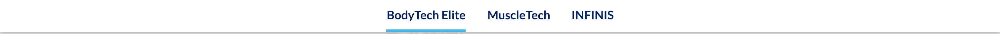

Platter component
Sticky Nav Bar
Transcribed from Confluence, authored by Sarah Lee. The source page is titled FSD: Sticky Navigation and its status is DRAFT, so the spec may still move. It is the client's spec, reproduced verbatim in substance. Where our implementation deviates it is recorded under Deviations, not by editing the spec.
Spec: https://getplatter.atlassian.net/wiki/spaces/TVS/pages/894042113/FSD+Sticky+Navigation
02 — Screenshots
How it renders
Wipe the handle across the design to find where the build drifts from it. The Figma frame and the capture are exported at the same width, so anything that moves under the handle is a real difference. Every width is below as a plain capture.



03 — Fields
What a merchandiser fills in
Generated from _schema.ts, in the order Amplience shows them.
| Field | Type | Constraints | Description | |
|---|---|---|---|---|
linksAnchor links |
array | required | Between two and four links, shown left to right in the order you list them here. Drag a row to reorder it. The order in this list is the order on the bar, and it should match the order the sections appear down the page or the underline will appear to jump backwards as a shopper scrolls. | |
sectionIdSection ID |
string | max 50^[a-z][a-z0-9-]*$ |
A name for this specific nav bar, used for two things. A link anywhere on the site can jump straight to it by ending the URL with # and this name, e.g. #shop-nav. Page-level CSS can also target this one nav bar rather than every sticky nav. Use lowercase letters, numbers and hyphens, start with a letter, and make it unique on the page — two modules sharing an ID will break the jump link. Leave empty if you need neither. This is a different field from the Section IDs you point the links above at — those belong to the modules further down the page. |
04 — Sample content
A filled-in example
From _content.json. This is what the screenshots above are rendering.
{
"links": [
{
"label": "BodyTech Elite",
"url": "#bodytech-elite"
},
{
"label": "MuscleTech",
"url": "#muscletech"
},
{
"label": "INFINIS",
"url": "#infinis"
}
],
"sectionId": "brand-nav"
}05 — Design reference
Design reference
The Confluence page embeds screenshots rather than linking frames. 18227:402761 is the section holding both breakpoints; the two frames inside it are the authority for measurements.
| Breakpoint | Frame |
|---|---|
| Desktop | Figma 18227:402720 — 1512 × 52 |
| Mobile | Figma 18227:402739 — 375 × 52 |
A white bar with a drop shadow carrying a centred row of text links, the active one underlined. The bar is 52px at both breakpoints and full-bleed at both — the rounded, inset card the Confluence mobile screenshot appears to show is the screenshot's own framing, not the design.
Both frames also contain a hidden right side group holding a product image, heading, variant and a button. It is hidden in both, so it is not part of this component; it looks like a sticky add-to-cart variant of the same bar and is worth raising before someone builds it twice.
06 — User requirement
User requirement
- User can click any anchor link to auto-scroll to the corresponding section.
- User can access the nav at any scroll depth — it becomes sticky after the user scrolls past it.
- User can see which section is currently active.
07 — Admin requirement
Admin requirement
| Content type | Functional requirement | Asset / copy requirement | Responsive & content behavior |
|---|---|---|---|
| Anchor Link (Required, x2-4) | Admin can add/remove anchor links. Each link includes: Name; Anchor target section (Use the mapping section ID). | On narrower breakpoints, when users can't see all links, it scrolls horizontally. | |
| Active-State Indicator | Component highlights the anchor link matching the section currently in view. | – | – |
| Global Sticky Header Override (Optional) | Admin can override the global sticky header via a "Disable global sticky header" checkbox setting. When checked, only the Sticky Anchor Navigation becomes sticky on scroll – the global site header does not. When unchecked, the Sticky Anchor Navigation will be attached underneath the global site header. | – |
08 — Other requirements
Other requirements
- Follows FSD: Global SEO Rule.
- Analytics: component supports automated impression tracking (viewport entry) and click tracking via the standard
raiseEventhandler.
09 — Open comments
Open comments
Felix Tellmann — resolved 2026-08-11
resolved 2026-08-11
How does a Platter component disable the global sticky header? The header is TVS's own Angular chrome, outside anything we render, and nothing in the TVS-Common surface or the ten downloaded TVS templates exposes a hook for it. We need either the class or attribute to set, or confirmation that a scoped CSS override from inside the landing page is the sanctioned approach.
Resolved by descoping rather than by an answer: the setting is removed, so no sanctioned mechanism is needed. See the Disable global sticky header — descoped deviation.
The band height was never part of this question. The section measures whatever TVS has parked at the top rather than assuming a number, so the mobile height, a promo strip above the header and a future redesign all resolve themselves.
10 — Deviations
Deviations
Recorded so the gaps are visible rather than forgotten.
Anchor target is a link field, not a section-ID picker
Built ctaLabel + ctaUrl per row
The spec's second sub-field is "Anchor target section (Use the mapping section ID)". We ship a general link field instead, so a row is ctaLabel + ctaUrl and an on-page target is written as #<section id>. This is a superset of the spec — every value the spec describes is still expressible — and it buys two things. The field names match every other CTA in the library, so a merchandiser filling a nav row is filling the same two boxes they fill in the hero and the expert module rather than learning a third vocabulary. And a nav that needs one off-page destination among its on-page ones does not need a schema change to get it.
The cost is that a merchandiser can enter a link the active-state indicator cannot track. That is stated in the field's own description: only # links are eligible for the underline, and anything else still navigates but never highlights.
Anchor-link count is enforced at 2-4
Built minItems: 2, maxItems: 4
Straight from the spec's "Required, x2-4". Worth naming because it is enforced by the CMS rather than by the template: the form refuses to save one link or five, so the markup never has to handle those cases.
Disable global sticky header — descoped
Not built
The Admin requirement's third row asks for a checkbox that unpins TVS's global site header, leaving only this nav sticky. Descoped on the client's instruction 2026-08-11. The field is removed from the schema and the CSS that unpinned their header is removed with it, so nothing this section ships reaches outside its own markup.
It was built and it worked against a stand-in, but it was never watched against TVS's real header on a landing page, and whether a Platter component may reach out and restyle their Angular chrome at all was still an open question with them. Removing it closes that question rather than shipping something nobody had sanctioned.
What remains is the unchecked behaviour, which is the one that matters: the nav parks below whatever TVS has at the top of the viewport, measured at run time — see The parking offset is measured, not assumed. That needs nothing from TVS and is unaffected by this removal.
Sticky is position: fixed, not position: sticky
Built a placeholder holds the vacated height
A sticky element only sticks within its own containing block, and Amplience wraps every content item in a <tvs-cms-component> whose height is exactly this section's height. position: sticky would therefore unstick on the same frame it started sticking. The bar is switched to position: fixed instead, and an outer element holds its height open so the page below does not jump up by the bar's height at the moment it detaches. Verified in Chrome at 1280×760 and 375×700: the bar detaches at the right scroll position and the content below it does not shift.
How far below the top of the viewport it parks is one variable, --plx-sticky-nav--offset, read by both the CSS and the scroll maths so they cannot disagree. It is measured from TVS's header at run time rather than fixed at a number — see The parking offset is measured, not assumed below. The 80px in the stylesheet is only the fallback for the frames before Alpine runs.
The parking offset is measured, not assumed
Built replaces the hard-coded 80px, 2026-08-10
The first implementation hard-coded 80px, measured once on qa1. That is wrong in four ordinary situations, none of which announce themselves: TVS's header does not pin until their own scroll handler fires, so before that there is nothing to clear and the bar hovered 80px below a header that had scrolled away; the mobile band height was never confirmed and is not obliged to match desktop; a promo or alert strip above the header changes the total; and the older production header.victory-header does not pin at all, where the correct offset is 0.
The section now measures. headerBottom() resolves TVS's header — trying .header-root__stack and header.victory-header, the same two selectors the unpin override targets — and returns its getBoundingClientRect().bottom, but only where the element actually computes to position: fixed or sticky, is parked against the top edge, and is shorter than 40% of the viewport. A static, scrolled-away or full-screen element measures 0, which is the right answer: park at the very top. Where neither selector matches, probeBottom() asks elementsFromPoint what is at the top edge instead and takes the lowest bottom among whatever is pinned there, so a renamed header, or a promo bar that outlives one, still parks the nav correctly instead of silently reverting to a stale constant. Our own bar and its ancestors are excluded from that probe — without that filter a bar parked at 0 would measure itself, push itself down, stop intersecting the probe point and oscillate.
It is measured on scroll, and it has to be. This is the section's only scroll listener and the one place its observer-driven design does not reach: TVS pins their header from their own scroll handler, so there is no event of ours and no attribute of theirs we can rely on. The listener is rAF-throttled and gated on the value actually changing, which in practice is twice a page — 0 to 80 when they pin, back when they unpin — so the observer rebuild it triggers is rare rather than per-frame. Reading the live rectangle rather than watching for their --pinned class is deliberate: it works the same whether they pin with a class, an inline style, a transform, or switch to plain position: sticky later.
Two things switch the measurement off entirely, both by design. A page or #sectionId rule that declares --plx-sticky-nav--offset wins outright — the section checks for a declared value first, which works precisely because the public token is declared nowhere. And the Disable global sticky header checkbox skips it, because the CSS already forces the offset to 0 and unpins their header; a measured inline value would otherwise fight that rule for the top slot.
Verified in Chrome at 1512 wide against a preview stand-in that pins from a scroll handler under TVS's own class name. With the header pinned the bar's top edge equals the header's bottom edge exactly; unpinned, removed from the DOM entirely, or with the checkbox set, the offset resolves to 0 and the bar parks at the top; with a page rule declaring 140px the section writes nothing and the bar parks at 140.
Anchors read url, and the scroll is a rAF loop
Corrected 2026-08-10 — both links and active state were inert
anchor() read item.ctaUrl. The schema's repeater item fields are label and url, so it read an absent key on every row, every anchor computed to null, and resolveTargets() produced an array of nulls. Two visible symptoms, one cause: go() returned early on every click so no link scrolled anywhere, and pickActive() found no targets so the active underline never appeared. The MutationObserver never ran either — pending() is false when no row has an anchor, so it correctly concluded there was nothing to wait for.
Worth naming because nothing caught it. check-references.js cross-checks $data.field against the schema at the top level; these are fields inside a repeater item, which it does not reach. The preview rendered perfectly — correct hrefs, correct labels — because the markup binds link.url directly and only the JS lookup was wrong.
The scroll itself was also inert, but only on a real LP. go() used scrollTo({ behavior: 'smooth' }), which scopes/anchor.js records as dead on TVS's pages — measured on qa1 the same day, their scroll handling cancels the browser animation on its first frame and leaves scrollY untouched for its whole duration. glide() now runs the same rAF loop of instant writes, with the same 500ms ease, as the canonical anchor scope. That scope is still not used here for the reason it states: this scroll subtracts the bar's own height as measured at the click. The destination is recomputed each frame rather than fixed at the click, because a click from the top of the page arrives after TVS pin their header, which moves the target by the header's height mid-flight.
reveal() keeps behavior: 'smooth' — it scrolls the link strip, an element, not the window, and the measurement above was of window scrolling.
Active state uses two IntersectionObservers and a MutationObserver
Built no scroll listener drives the active link
The three are watchStick, watchSections and watchIds in the section scope. watchStick asks one question only — has the placeholder top edge passed the parking line — and is what flips stuck; it has nothing to do with the active link. watchSections is the pair of IntersectionObservers described below, and pickActive is the function that answers "which section" from the rectangles. watchIds is the MutationObserver.
The observers are triggers only; which section is current is then computed from the targets' rectangles. Reading the observer entries directly is the obvious implementation and is wrong twice over — a section stops intersecting while it is still the one in view, and in the gap between two modules nothing intersects at all, so the indicator sticks on whichever section left last.
Two root shapes are needed because each has a blind spot the other covers. A 1px band directly under the bar fires as a section's top crosses the line, which a half-open root misses because the section is still below it. A half-open root fires when a scroll jump lands with nothing in the band at either end, which is every jump straight back to the top of the page.
The MutationObserver is not defensive. Every Platter section sets its own id from :id="$data.sectionId", so the elements these links point at are still id-less when this section initialises, and an observer built at that moment would observe nothing at all. It watches for ids appearing and disconnects itself once every anchor has resolved.
Indicator is a pseudo-element, and hover is ours
Built visually identical to Figma's border, plus a hover Figma lacks
Figma draws the active indicator as a 4px bottom border on the link (sections/background-accent, #41b6e6 — deliberately the lighter blue, not brand blue). We draw it as a pseudo-element instead. A real border-bottom sits inside the box, so on a 52px link with centred text the type would jump 2px upwards on whichever link happened to be active; the pseudo-element is pixel-wise the same line and moves nothing.
Hover is not in Figma at all. Showing the indicator at full strength on hover would make every link a shopper passes over look like the one they are on, so hover draws it at half opacity and the active link stays at full. Focus-visible is also ours, and takes the navy ink rather than the indicator blue — #41b6e6 is too light to hold 3:1 against a white bar.
Values re-synced against Figma 2026-08-06
Corrected 2026-08-06 — first build's type and spacing were estimates
The section was first built from the Confluence screenshots before Figma access was available, and the estimates were mostly wrong. Corrected against 18227:402720 and 18227:402739: bar height 83px to 52px, type 16/14px to 18/16px at line-height 1.5, gaps 40/24px to 32px at both, indicator 3px #0458ad to 4px #41b6e6, shadow 0 2px 8px rgb(0 0 0 / 8%) to 0 3px 4px rgb(0 0 0 / 17%). Horizontal padding, 48px desktop and 16px mobile, was already right.
Every one of those is now verified by measuring the rendered page rather than by eye. One of them was not a value at all: the bar measured 84px against Figma's 52px because Tailwind's preflight is disabled, so the UA's 16px block margin on <ul> survives. p-0 does not remove it — m-0 does.
The nav's accessible name is fixed, not a field
Built aria-label="Section navigation"
A <nav> needs an accessible name, and the FSD provides no field for one. Rather than add a field a merchandiser would have to think about for no visible result, the name is fixed. The cost is that two sticky navs on one page would share a name; the component is specified as the page's single anchor nav, so that is a deliberate trade rather than an oversight.
Schema is hand-written JSON, not _schema.ts
Corrected 2026-08-06 — the factory grew a repeater, and the port is done
The original entry read:
Status: Not built — blocked on the factory The repo migrated section schemas to a typed factory (
schema/section.ts), andsections/CLAUDE.mdnow names_schema.jsonas generated. This section cannot follow:schema/types.tsdeclaresField = StringField | BooleanField, so there is no way to express an array of objects, which is the whole shape oflinks. As of77f6904the other two sections have ported and this is the last one on the hand-written path, so the build warns on it every run. The JSON is valid and the warning is accurate — it is a real gap, not noise. Closing it needs anArrayFieldin the factory whoseitemsis itself aFieldsrecord, so a row can carryctaLabelandctaUrlfrom the shared vocabulary rather than redeclaring them, plusminItems/maxItemsfor the spec's "Required, x2-4". That belongs to whoever owns the factory, not to this section.
schema/types.ts gained RepeaterField and ObjectField — an array field whose items is itself a nested Fields record — and sections/sticky-nav-bar/_schema.ts now composes it: links is authored as an inline RepeaterField (minItems: 2, maxItems: 4) and its row is an inline ObjectField carrying ctaLabel and ctaUrl from the shared vocabulary rather than redeclaring them. Both of those two factories were widened from ProseOverride to also accept minLength/maxLength — a legitimate per-context override, since ctaLabel needs maxLength: 24 here (four links have to fit across the bar) against the factory's default of 30, and both need minLength: 1. No other factory was widened. required on the two sub-fields is applied by spreading each factory's return with required: true rather than widening the override type further, since ProseOverride deliberately excludes required.
pnpm build:fast now reports zero hand-written-JSON warnings, and the round trip (scripts/schema.test.js, MIGRATED now includes sticky-nav-bar) is deep-equal against the committed _schema.json. The only diff _schema.ts produced is a key reorder inside items — required before propertyOrder, the generator's order rather than the hand-written one — plus the usual array re-wrap JSON.stringify does everywhere else. Both are semantic no-ops; deep equality was the bar, not byte identity.
Analytics — impression (viewport entry)
Not built
Same position as every other section. No impression event name appears anywhere in the ten downloaded TVS templates — only ItemClick and the ATC event — so building one means inventing a name TVS's handler would ignore. Needs the event name and payload from TVS.
Structured data per module
Not built
Required by FSD/globals.md; deferred by agreement. Worth flagging that this section is a stronger candidate than most: a nav of in-page anchors is exactly what SiteNavigationElement describes, so it is the first module where the deferral has an obvious concrete cost.